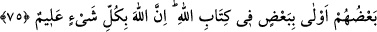

ÎMÂN, HİCRET VE CİHÂD
72. İman edip hicret edenler, Allah yolunda mallarıyla, canlarıyla cihad edenler ve
muhacirleri barındırıp onlara yardım edenler, işte onlar birbirinin dostudurlar. İman
edip hicret etmeyenlerle hicret edinceye kadar sizin dostluğunuz yoktur. Fakat din
uğrunda yardım isterlerse, onlara yardım etmeniz gerekir. Yalnız, aranızda anlaşma
bulunan bir topluma karşı (onlara yardım etmeniz) müstesnâ. Allah yaptıklarınızı
hakkıyla görücüdür.
73. İnkar edenler birbirlerinin dostlarıdır. Eğer siz böyle yapmazsanız
yeryüzünde fitne ve büyük bir fesad çıkar.
74. Îman edip hicret eden ve Allah yolunda cihad edenler, muhacirleri
barındıranlar, yardım edenler: İşte gerçek müminler onlardır. Mağfiret ve bol rızık
da onlarındır.
75. Sonradan îman edip hicret eden ve sizinle birlikte savaşanlar da sizdendir.
Akrabalar Allah’ın Kitabı’na göre birbirine (vâris olmağa) daha yakındır. Allah her
şeyi hakkıyla bilendir.
Allah Teâlâ’ya, Muhammed (s.a.v.)’e ve Kur’an’a “îman edip” Allah ve Rasûlullah
sevgisi uğruna vatanları Mekke’yi terk edip “hicret edenler, Allah yolunda” harp âlet
ve silâhı almak, muhtaçlara infâk etmek suretiyle “mallarıyla,” bizzat harbe katılıp
ölümü göze alarak “canlarıyla cihad edenler”